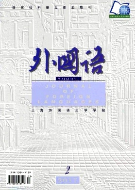
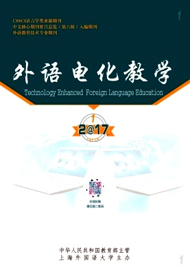

学术期刊

语言: 中文 / English |
| 编号: 1001-5795 (ISSN) |
| 首期: 1979年4月 |
| 频次: 双月刊 |
| 主编: 吴友富 |
| 网站: http://wydhjx.cbpt.cnki.net |
| 电话: +86 (21) 3537 3318 |
| 邮箱: wydhjx204@163.com |
| 引文索引: CSSCI / GCJC |
| 语言: 中文 / English |
| 编号: 1004-5112 (ISSN) |
| 首期: 1980年3月 |
| 频次: 双月刊 |
| 主编: 庄智象 |
| 网站: http://www.waiyujie.net |
| 电话: +86 (21) 6542 0525 |
| 邮箱: |
| 引文索引: CSSCI / GCJC / CHSSC |
| 语言: 中文 / English |
| 编号: 1004-5139 (ISSN) |
| 首期: 1978年3月 |
| 频次: 双月刊 |
| 主编: 束定芳 |
| 网站: http://jfl.shisu.edu.cn |
| 电话: +86 (21) 3537 3317 |
| 邮箱: waiguoyu1978@shisu.edu.cn |
| 引文索引: MLA* / CSSCI / GCJC / CHSSC |

| 语言: 中文 / English |
| 编号: 1006-6101 (ISSN) |
| 首期: 1984年10月 |
| 频次: 季刊 |
| 主编: 谢天振 |
| 网站: http://clc.shisu.edu.cn |
| 电话: +86 (21) 3537 2625 |
| 邮箱: shccl203@126.com |
| 引文索引: CSSCI / GCJC / CHSSC |
更多资料请访问：http://www.shisu.edu.cn/research/journals-and-publications